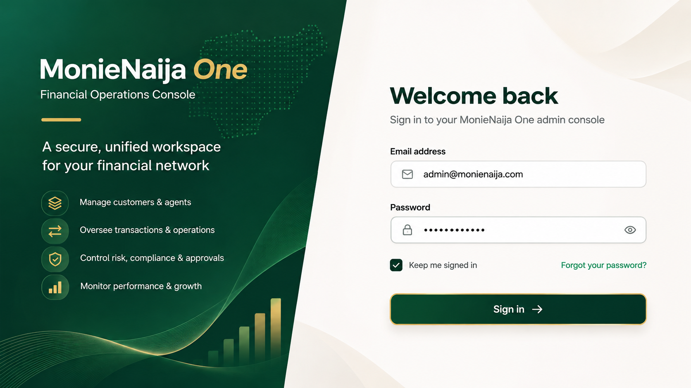
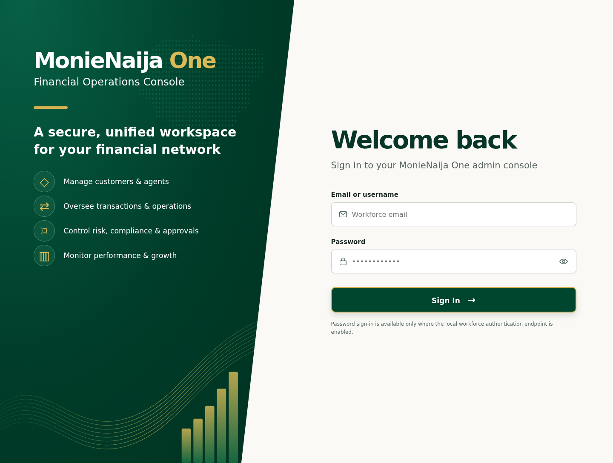
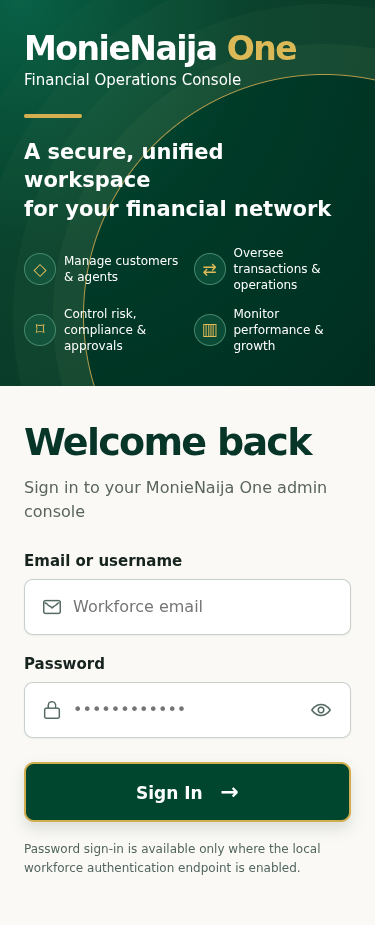
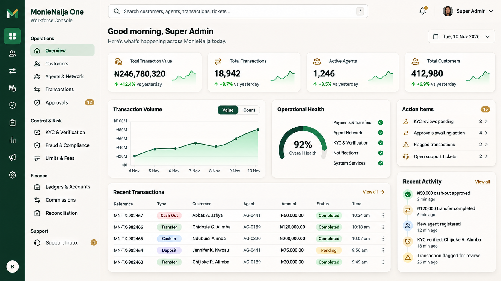
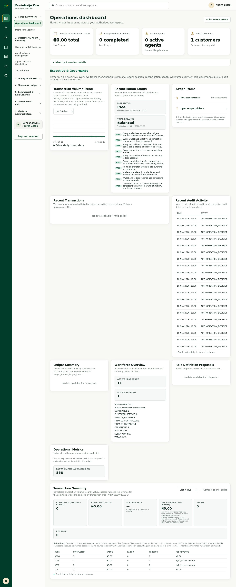
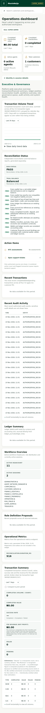
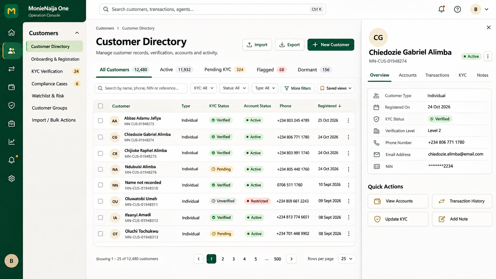
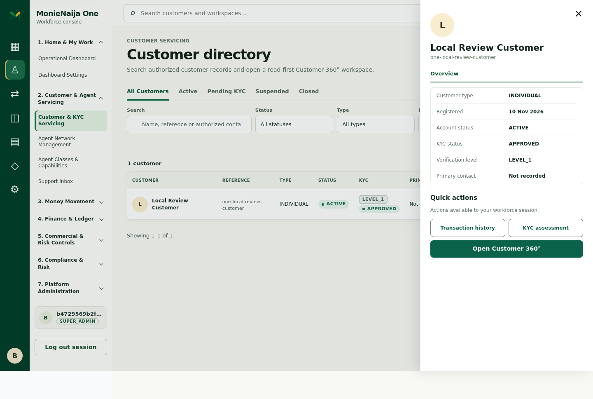
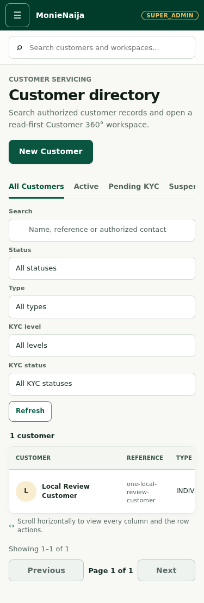
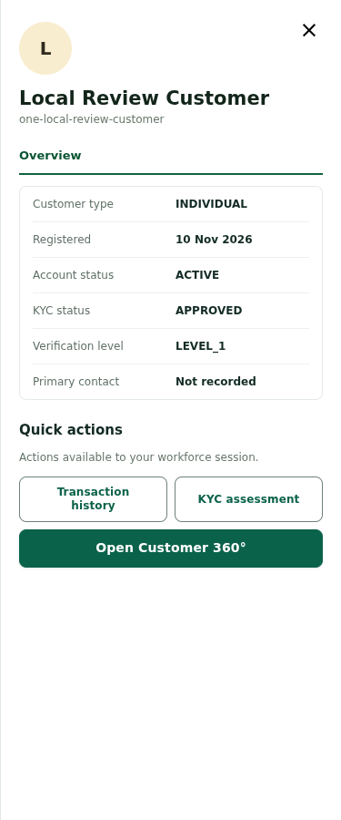

MonieNaija One: Phase 1 visual comparison
Left: approved illustrative desktop reference. Right: actual headless Chromium capture of the implementation at 1440px, using a disposable local database. Images keep their aspect ratio; scroll inside a frame to inspect a full-page capture. Mobile captures use a 375px width; the full directory image uses an expanded-height viewport to ensure Chromium paints its scrollable table, while separate 375 × 900 viewport captures show the actual scrolled table. The supplied package contains no mobile references.
Review status: The references are the target, not evidence of functionality. The local data shown is synthetic, not production. Screens differ materially in some areas, as listed below. Owner approval is still required.
1. Sign-in
Approved reference

Implementation — Chromium 1440px

The two-panel composition, green/gold identity and form hierarchy follow the reference. The angled edge, decorative map/waves and password reveal have been added. Remember-me and password reset remain unavailable pending supported authentication policy and backend flows.
Implementation — Chromium 375px

2. Operations dashboard
Approved reference

Implementation — Chromium 1440px

The rail, secondary navigation, search, cards and transaction trend are structurally similar, but the widget arrangement and density differ. Search finds authorized customers and permitted workspaces, but not agents, transactions or tickets. KPIs use authorized transaction, agent and customer endpoints rather than the illustrative reference values. The action panel uses available KYC and support data; combined action and flagged transaction counts need backend support. Available reconciliation and audit widgets replace the illustrative health score and activity. The empty chart reflects the disposable database.
Implementation — Chromium 375px

3. Customer directory and preview
Approved reference

Implementation — Chromium 1440px, preview open

The directory has real status filters, search, table, pagination and a modal overview drawer. Filters wrap rather than fitting on one row; the drawer uses returned directory fields and offers authorized customer-context actions plus the existing Customer 360 workspace. No import/export, saved views, mock tabs, or bulk actions are presented as functional.
Implementation — Chromium 375px, directory

Implementation — Chromium 375px, preview open

The mobile table now scrolls as a whole, so its first column no longer covers the row action. The complete mobile directory image uses an expanded-height 375px viewport to avoid Chromium omitting the off-screen overflow region. The mobile drawer image is a 375 × 900 viewport. Actual 375 × 900 viewport before horizontal scrolling and after scrolling to the action are available for inspection.


See evidence notes and capture manifest for environment, tested workflows, and limitations. Open any image directly for its original resolution.